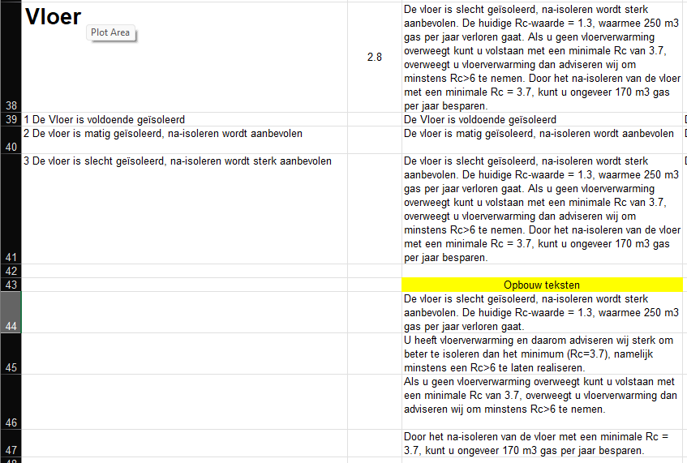

Teksten voor rapporten.
Wordt momenteel niet gebruikt en tabblad is dus verborgen.
Template teksten die automatisch gebruikt worden of handmatig gebuikt kunnen worden in het rapport. De numeriek waarden in deze teksten komen uit de daadwerkelijke invoergegevens of berekende waarden van deze woning.
